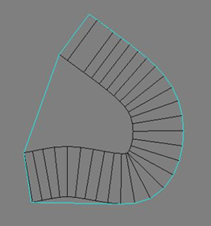
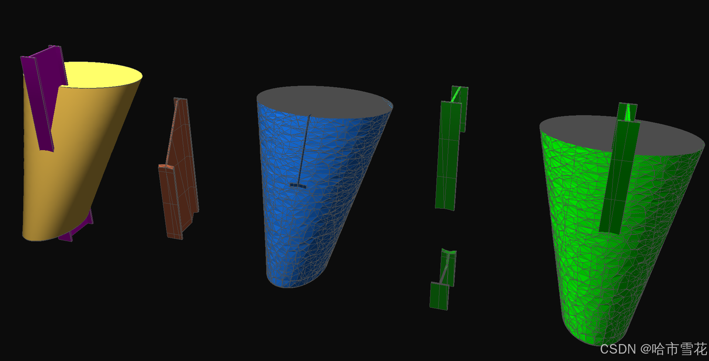
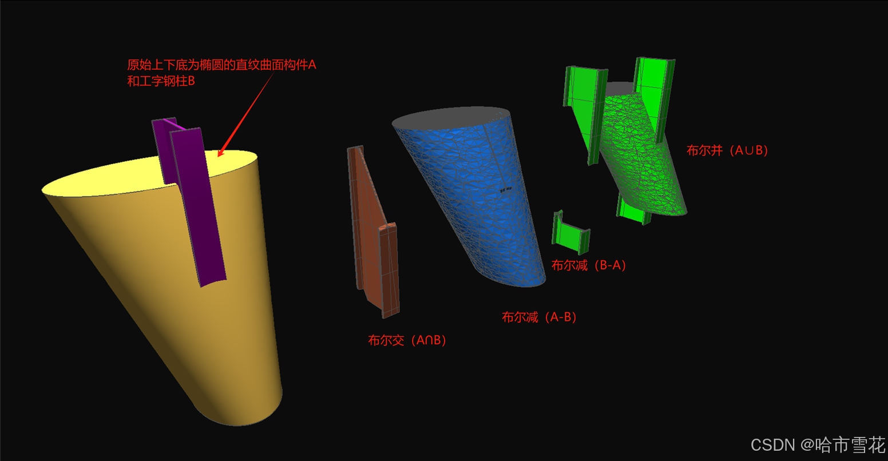

CGLib
1.关于
CGLib (Computational Geometry Library)，全称“计算几何库”，C++语言实现的可跨平台运行的几何库，覆盖常见几何算法内容，包括基础数据结构、仿射变换、常用计算工具、关系计算、网格化、布尔运算、实体造型、曲线曲面、精度&误差、其他常见议题及显示相关。
同时提供C#版封装库。下图中蓝色部分为已有或正在建设中。
Important
绿色方框是一些注释或者重要的提示。
Attention
红色方框是一些警告或者一些你需要特别注意的事项。
提示/补充
蓝色方框是为了帮助读者理解提示或补充的附加信息。
欢迎关注和交流
- 网站：cglib.net
- 公众号：哈市雪花
- 邮箱： heuwzl@163.com
- CSDN：哈市雪花 （点击打开链接）
CGLib提供的图形几何算法接口主要集中在如下头文件中
CGUtils.h: 包含实体造型、布尔运算、网格化、轮廓提取、生成轮廓树、凸分割、二三维凸包、紧密外轮廓、面积、体积计算，及一系列实体关系计算等接口；CurveTool.h: 包含距离、投影、法向计算、切割、线交点、点合并、线去重等基础接口；BooleanUtils.h: 轮廓布尔运算相关接口，包括交、并、差、取反接口；Paving.h提供轮廓铺装算法接口；
1.1.基础概念
- 右手法则
- 仿射变换
- Z-Up和Y-Up
- BSP
- 二叉树
- 八叉树
- 角度和弧度
- 半边结构
- 分治法
- 递推
- 增量构建
- 路径规划
- 夹角极值
- ......
2.基础数据结构
2.1.实体结构表达
实体结构的表达由多种方式，如分解表示、构造表示CSG（Constructive Solid Geometry）和边界表示BRep（Boundary Representation）等。
补充：
常见的分解表示法有四叉树、八叉树、BSP树等方式。
CSG方式出现较早，后来出现了BRep普及比较快，现在大部分领先的几何内核
当前工业软件发展较快，数字化相关平台和软件百家争鸣，云化是当前工业软件热门的发展方向之一，而有关采用哪种方式进行实体结构表达似乎讨论非常多，如果不理解原理特点和应用框架逻辑，再多的讨论也可能不着要点。
不同的实体结构表达方式特点不同，在几何内核范畴内尤为关注，比如布尔运算的实现方案和实体结构表达方式密切相关，有CSG布尔运算、BRep布尔运算、网格布尔运算等多种方式；再比如关系判断也离不开实体结构表达方式，点/线/面/实体与实体关系等计算。实体结构表达是几何库基础数据结构表达的重要部分，也是几何库的基础。
为了便于应用，需要在平台层进行封装和实现，提供便于使用的接口，支撑应用侧的开发。平台层一般会封装不便于理解的实体结构表达，以参数化数据结构的方式，比如立方体具有长宽高（Length/Width/Height）参数，而圆具有圆心（Center）和半径（Radius）参数。
值得注意的是这并不意味着平台和应用层不关系实体结构表达方式，一些情况下需要获取这些数据结构（如拾取面），更重要的是根据需求场景特点进行几何库的选用，作为几何库重要基础，实体结构表达方式仍然是重要考虑的方面，毕竟在关注轻量级使用的场景，没有多少人愿意在CSG方式的基础上进行几何计算。
2.2.其他
基础数据结构还包括向量、矩阵、点、线、面、平面等以及相关基础方法，如向量点乘/叉乘、矩阵运算等。
这里写一句令作者感触颇深的话：没有人才，一切谋略均是空谈；脱离人才的谋略可能被称为阴谋诡计
3.仿射变换
CGLib支持仿射变换矩阵中的缩放、旋转、平移以及非均匀变换，当然也支持左/右手坐标系之间的转换、Y-Up/Z-Up转换、镜像转换等，这并不是什么高深的事情，因为矩阵并没有和左手/右手坐标系概念绑定，他是空间姿态变换的数学表达。
4.常用计算工具
4.1.长度
CGLib提供线段（Line）、圆弧线（Arc）、椭圆弧线（EllipseArc）的长度计算。此外还提供Nurbs曲线长度计算，这将在曲线曲面章节中进行描述。
4.2.面积
CGLib提供面的面积计算，通过公式的推导简化计算逻辑和处理过程，从而提供一种精度较高的面积计算算法。具体来说是提供任意多边形轮廓面的面积计算接口，当轮廓或面含有非线段边（Edge）时，需要将其离散为线段，这也意味着对于此类面的面积计算具有误差，误差主要来源于曲线离散为近似表达的线段过程。CGLib提供曲线离散接口。
补充：
算法流程可参考博主CSDN博文：一种误差较小的轮廓面积计算算法
CGLib提供的接口如下，
// CGUtils.h
static double GetArea(const list<Line>& polygon, const Transform& trsW2L);
static void GetTransformL2W(const list<Line>& polygon, Transform& trsL2W);
// (推荐使用) CurveTool.h 在计算法向时同样返回面积
static Vector3f GetNormal(const list<Line>& polygon, double& area);
4.3.体积
CGLib提供实体体积计算，通过公式的推导简化计算逻辑和处理过程，从而提供精度较高的计算结果。由于体积计算依赖实体面的面积计算，实体面的面积计算具备上述面积计算的特点。 值得一提的是长度、面积、体积计算的思想理念主要来源于微积分，微分和积分的思想，然后应用于算法中。
补充：
算法流程可参考博主CSDN博文：几何算法系列：空间实体体积计算公式推导
CGLib提供的接口如下，
// CGUtils.h
static double GetVolume(const Body& body);
4.4.法向
CGLib提供轮廓和面的法向计算，结合加权平均的思想提供一种准确且误差较小的法向计算接口。在实际工程中，轮廓坐标可能很大，可能含有微小的边，可能具有整体平面但局部空间的特点......这可能导致计算误差，在算法实现中需要兼容考虑这些场景，因为你无法预测调用接口传入的数据，也很难去进行限制。
补充：
算法流程可参考博主CSDN博文：一种误差较小的计算轮廓法向的方法
CGLib提供的接口如下，
// CurveTool.h 计算法向同时返回面积
static Vector3f GetNormal(const list<Line>& polygon, double& area);
4.5.曲率
CGLib曲率计算还不够完善，需要去建设。
4.6.包围盒
包围盒是从事图形几何相关开发和应用开发者非常熟悉的概念，包括AABB包围盒、OBB包围盒，广义来说还包括包围球、凸包、最小外接轮廓等。 本节只关注与侠义的包围盒概念，有关其他概念可以继续阅读后续章节或参考相关资料。 CGLib提供AABB包围盒的计算。
CGLib提供的接口如下，
// CGUtils.h
static void getBoundingBox(const vector<pair<Vector3f, Vector3f>>& mapMeshId2BoundBox, Vector3f& boundingBoxMin, Vector3f& boundingBoxMax);
static void getBoundingBox(const list<Vector3f>& lstVertex, Vector3f& boundingBoxMin, Vector3f& boundingBoxMax);
static void getBoundingBox(const list<Line>& lstLine, Vector3f& boundingBoxMin, Vector3f& boundingBoxMax);
static void getBoundingBox(const Body& body, Vector3f& boundingBoxMin, Vector3f& boundingBoxMax);
static void getBoundingBox(const TriangleMesh* mesh, const Transform* trs, Vector3f& boundingBoxMin, Vector3f& boundingBoxMax);
static void getBoundingBox_IdentTrs(const TriangleMesh* mesh, Vector3f& boundingBoxMin, Vector3f& boundingBoxMax);
static void getBoundingBox_NotIdentTrs(const TriangleMesh* mesh, const Transform* trs, Vector3f& boundingBoxMin, Vector3f& boundingBoxMax);
4.7.凸包
凸包包括二维凸包和三维凸包，对于确定的数据，其凸包计算结果是确定的，无论采用哪种算法，也无论从数据的什么位置开始计算，这和Delaunay三角剖分算法有类似的特点。 CGLib提供二维凸包和三维凸包的计算，采用增量构建的思想。
4.7.1.二维凸包
CGLib提供的二维凸包计算接口和效果如下，
// CGUtils.h
static bool CalConvexHull(const list<Vector3f>& lstVertex, const Vector3f& normal, list<Line>& convexHull);
提示：
如下效果图是在GL2DViewer中绘制轮廓并通过凸包计算命令控制生成的。

4.7.2.三维凸包
CGLib提供的三维凸包计算接口和效果如下，
// CGUtils.h
static bool Cal3DConvexHull(const list<Vector3f>& lstVertex, Body& convexHull);

提示：
如下效果图是在GLViewer中调用CGLib进行处理和渲染显示的。
补充：
算法流程可参考博主CSDN博文：几何算法系列-三维凸包
4.8.紧密外轮廓
CGLib支持计算点集、图像的紧急外轮廓，提供的接口和效果如下，
// CGLib.h
static bool CalMinHull(const list<Vector3f>& lstVertex, const Vector3f& normal, list<Line>& hull);
图片图像的紧密外轮廓计算可参考结合OpenCV库提取图像的轮廓线集合，之后再调用CGlib接口实现。
int getContoursFromImage(const cv::String& folder, const cv::String& fileName, std::vector<std::vector<cv::Point>>& contours, cv::Mat& srcImage)
{
string filePath = folder + "/" + fileName;
srcImage = cv::imread(filePath, cv::ImreadModes::IMREAD_UNCHANGED);
//条件语句检查 srcImage 图像是否为空（即图像是否未成功加载）
if (srcImage.empty()) {
printf("could not load image ...");
return -1;
}
//cv::imshow("输入图像", srcImage);
double thresh = 85;
// 提取轮廓
cv::Mat image = cv::imread(filePath, cv::IMREAD_GRAYSCALE); // 读取灰度图像
cv::Mat binaryImage;
cv::threshold(image, binaryImage, thresh/*100*/, 255, cv::THRESH_BINARY); // 二值化分割，大于阈值为255，小于阈值为0
std::vector<cv::Vec4i> hierarchy;
// 遍历轮廓并绘制
cv::findContours(binaryImage, contours, hierarchy, cv::RETR_LIST, cv::CHAIN_APPROX_SIMPLE);
return 0;
}
提示/补充
CGViewer直接提供图片绘制和外轮廓提取功能，并可将提取的外轮廓绘制到图片中，效果如下图，可免费使用。

4.9.离散（Tessellate）
Tessellate这一词汇在数学中,特别是在几何学领域,具有独特的含义。包括线的离散、面的离散、实体的离散等概念。 你可能已经明白了，
Important
- 线的离散是将线离散为近似表达的若干个线段；
- 面的离散是面的网格化（三角化/四边形化/凸分解等）；
- 而实体的离散则是实体的离散，将实体无重叠的铺满一种或多种形状，当然对于不同实体结构表达方式，实体的离散是不同的，对于BRep方式来说，实体的离散和面的离散有很多相同的地方。典型的实体离散表现为实体的网格化、实体的凸分解等。
CGLib提供如下离散计算：
- 将线离散为近似表达的若干条线段；
- 将面离散为无重叠的铺满某种形状，包括面的网格化或面的凸分解；
- 将实体离散为无重叠的铺满三角形，即实体的网格化；
4.10.UV计算
UV计算是图形几何领域重要话题之一，曲线/曲面的参数化表达、纹理贴图的镶贴等均与此相关。 CGLib的UV计算尚不够完善，正在建设中。
4.11.形心
形心即几何中心，作为几何特征之一，也是图形几何领域常见的概念。包括线的中心、面的形心、实体的几何中心等，此外重心、惯性矩等概念与此密切相关。
5.关系计算
关系计算是图形几何领域重要话题，包括点、线、面、实体之间的关系，涵盖包含关系、相交关系、最近距离、投影以及衍生的切割等相关内容。 CGLib基本完整的提供上述大部分计算，包括关系计算、切割、布尔运算等相关内容。
提示：
如下效果图是在GL2DViewer、GLViewer中调用CGLib生成并显示的。
Important
关系计算 为图形几何领域基础工具算法，是重要的基础设施，很多高级算法或应用算法均需要依赖这些基础设施进行实现。
CGLib提供的部分关系计算函数接口如下，其中布尔运算等为单独的话题内容，相关接口未列出，详见对应章节内容。
// 求线与轮廓交点
void LineIntersectPolygon(const Line& lineOri, _Iter first, _Iter last, bool recordBorder, const Face* faceTarget, vector<PointBorderData>& lstInterPt);
// 求线与面交点
void LineIntersectFace(const Line& line, const Face& faceTarget, bool recordBorder, vector<PointBorderData>& lstInterPt);
// 点与线关系判断
bool IsOnLine(const Vector3d& pt, const Vector3d& pt1, const Vector3d& pt2, float tolerance = 1e-3, float tolerance2 = 1e-4);
// 点与三角关系判断
PointInTriangleType InTriangle(const Vector3f& pt0, const Vector3f& pt1, const Vector3f& pt2, const Vector3f& ptTarget);
// 点与面关系判断
PointInPolygonResult IsPointInFace(const Vector3f& point, const Face& face, bool needBoxDetermine = true);
// 点与轮廓关系判断
PointInPolygonResult IsPointInPolygon(const Vector3f& point, const list<Line>& polygon, bool needBoxDetermine = true);
// 点与空间盒关系判断
bool IsPointInBox(const Vector3f& point, const Vector3f& boundingBoxMin, const Vector3f& boundingBoxMax);
// 点与实体关系判断
bool IsPointInBody(const Vector3f& point, const Body& body);
// 空间面是否切割三角
bool PlaneCutTriangle(float a, float b, float c, float d, const TriangleData& tri, vector<TriangleData>& resultIn, vector<TriangleData>& resultOut);
// 空间面是否切割线
int PlaneCutLine(const Vector3f& vert1, const Vector3f& vert2, float a, float b, float c, float d, Vector3f& inter, bool& node1Out);
// 实体与面是否相交
bool IsFaceCutted(const Body& body, const Face& faceTarget);
// 射线是否与球相交
bool IsRayHitSphere(const Sphere& sphere, const Vector3f& start, const Vector3f& pntOn, vector<Vector3f>& pntsHit);
// 射线是否与面相交
bool IsRayHitFace(const Face& face, const Vector3f& faceNormal, const Vector3f& ptOri, const Vector3f& dir, double& t);
// 射线是否与三角相交
bool IsRayHitTriangle(const Vector3f& orig, const Vector3f& dir, const Vector3f& v0, const Vector3f& v1, const Vector3f& v2, double* t);
// 射线是否与包围盒相交
bool IsRayHitBoundingBox(const Vector3f& rayStart, const Vector3f& rayDir, const Vector3f* boundBoxMin, const Vector3f* boundBoxMax, Vector3f& interPt0, Vector3f& interPt1);
// 空间线是否相交
bool IsLineIntersect(const Line& line1, const Line& line2, Vector3d& intersection);
// 空间面是否相交
bool IsPlaneIntersect(const Vector3f& point1, const Vector3f& normal1, const Vector3f& point2, const Vector3f& normal2, Vector3f& ptOnInterLine, Vector3f& dirInterLine);
6.网格化
网格化是图形几何的核心话题之一，也是评判几何库能力的重要指标依赖项。 网格化包括Delaunay三角剖分、Voronoi图生成、网格剖分等内容。
6.1.Delaunay三角剖分
CGLib Delaunay三角剖分效果如下，
提示：
如下效果图是在GL2DViewer中绘制点并通过Delaunay网格生成命令控制生成的。
6.2.Voronoi图
Voronoi图可由Delaunay网格生成，计算Delaunay网格所有的三角形外接圆的圆心，连接各圆心得到维诺图。
Voronoi图中以点为中心的多边形的边数取决于该点相邻的三角形数量。以点为中心的Voronoi图的构造过程中，每个相邻三角形的外接圆中心就是多边形的顶点，连接所有与该点相邻的三角形的外接圆中心，构成的多边形即为该点在Voronoi图中的形状。
6.3.网格剖分
网格剖分分为二维和三维网格剖分，研究该话题的论文非常丰富，提供多种方法，而不同的几何库采用各自选择的方案进行实现，当然相同的方案也会有不同的实现效果和质量。 对于二维轮廓的网格剖分，有耳切法、Delaunay方法、BSP分割法、基于凸分解的剖分法等方法。 CGLib采用耳切法实现二维网格剖分算法，支持任意多边形轮廓的剖分，支持带有洞口和嵌套岛洞的情况。 CGLib同时提供凸分解计算，可以在凸分解计算的基础上进行凸轮廓的网格化计算，当然这更多的是一种理念方式。
对于空间曲面的网格化，CGLib采用Nurbs曲面网格化的思路，即从参数化曲面中提取参数点构成凸多边形，然后使用Delaunay剖分的方法得到近似表达空间曲面的无重叠铺满的三角形。
Attention
值得一提的是BSP分割法更侧重于理念，在理论上这是一种有效的网格剖分方法，但会产生零碎的三角面，这些三角面可能和轮廓顶点没有连接关系，一般具体实现中不会采用此方法进行网格化计算。
// CGUtils.h
static void TessellateBody(const Body& body, TriangleMesh& mesh);
static void TessellateFace(const Face& face, TriangleMesh& mesh);
static void TessellateFace(const Face& face, vector<Vector3f>& lstPoint, vector<unsigned>& lstTri, vector<unsigned>& edges, vector<Vector3f>& normals, vector<Vector2f>& uvs);
static void TessellatePolygon(const vector<Vector3f>& lstPoint, const Vector3f& normal, TriangleMesh& mesh);
// 轮廓树（具有层级关系的轮廓集合）网格化
static void TessellatePolygonTree(const PolygonTree* polygonTree, const Vector3f& normal, list<Vector3f>& lstPoints, list<unsigned int>& lstTris, list<unsigned int>& lstEdge, list<Vector3f>& lstNormal, list<Vector2f>& lstUv);
static void TessellatePolygonTree(const PolygonTree* polygonTree, const Vector3f& normal, TriangleMesh& mesh);
6.3.1.二维网格剖分
CGLib提供的网格剖分效果如下，
提示：
如下效果图是在GL2DViewer中绘制轮廓并通过网格剖分命令控制生成的。
6.3.2.三维网格剖分
CGLib提供的三维网格剖分效果如下，
提示：
如下效果图是在GLViewer中调用CGLib进行处理和渲染显示的。
7.布尔运算
布尔运算和实体结构表达方式密切相关，分为二维布尔运算和三维布尔运算。经过布尔运算可以得到A∩B、A∪B、A-B和B-A部分。
7.1.二维布尔运算
二维布尔运算可以以点为单元或以线为单元进行计算。 CGLib提供二维布尔运算计算。
// BooleanUtils.h
// 取反
static void AntiPolygon(const list<Line>& polygon, list<Line>& result);
static void AntiPolygon(const list<list<Line>>& polygon, list<list<Line>>& result);
// 交集
static void Intersect(const Vector3f& normal, const list<Line>& outer1, const list<list<Line>>& inner1, const list<Line>& outer2, const list<list<Line>>& inner2, list<list<Line>>& result);
// 并集
static void Union(const Vector3f& normal, const list<Line>& outer1, const list<list<Line>>& inner1, const list<Line>& outer2, const list<list<Line>>& inner2, list<list<Line>>& result);
// 差集
static void Difference(const Vector3f& normal, const list<Line>& outer1, const list<list<Line>>& inner1, const list<Line>& outer2, const list<list<Line>>& inner2, list<list<Line>>& result);
提示：
如下效果图是在GL2DViewer中绘制轮廓并通过布尔运算命令控制生成的。
7.2.三维布尔运算
根据实体结构表达方式分为BRep布尔运算、CSG布尔运算、网格布尔运算等，而网格布尔运算又有多种，如BSP方式、八叉树方式。 CGLib提供BRep布尔运算、网格布尔运算，其中网格布尔运算提供BSP方式和八叉树方式。
// CGUtils.h
// BRep布尔运算
static void BodyIntersect(const Body& body1, const Body& body2, vector<Face>& facesInter);
static void BodyUnion(const Body& body1, const Body& body2, vector<Face>& facesUnion);
static void BodyDifference(const Body& body1, const Body& body2, vector<Face>& facesResult);
// mesh BSP布尔运算
// 注意：建议forceOperate传参值false，否则可能出错抛异常
static void BodyIntersect(const TriangleMesh& meshA, const TriangleMesh& meshB, TriangleMesh& inter, bool forceOperate);
static void BodyUnion(const TriangleMesh& meshA, const TriangleMesh& meshB, TriangleMesh& meshUnion, bool forceOperate);
static void BodyDifference(const TriangleMesh& meshA, const TriangleMesh& meshB, TriangleMesh& meshDiff, bool forceOperate);
// mesh 八叉树布尔运算
static void BodyIntersect_CSGOctTree(const TriangleMesh& meshA, const TriangleMesh& meshB, TriangleMesh& inter);
static void BodyDiff_CSGOctTree(const TriangleMesh& meshA, const TriangleMesh& meshB, TriangleMesh& meshDiff);
static void BodyUnion_CSGOctTree(const TriangleMesh& meshA, const TriangleMesh& meshB, TriangleMesh& meshUnion);
Attention
值得指出的是BSP方式更多的是理念方法，在实际工程中一般不采用此方式，BSP方式逻辑简单暴力，效率较低，会产生大量的零碎三角面，且对数据规范性要求较高，适用性较差，实际工程数据来源多，很难保证完全提供符合其要求的数据，不建议采用这种方式。
不同方式的布尔运算算法并非是功能完全一致的，即有其适用场景同时不可被另一种完全替代。可以根据实际应用场景进行布尔运算方式的选择，如原始实体数据为三角网格的时候采用网格布尔运算，而原始实体数据为BRep实体时采用BRep布尔运算方式。
提示：
如下效果图是在GLViewer中调用CGLib进行处理和渲染显示的。

7.3.不规范数据的处理
如上述章节提到过，作为基础的算法工具，很难去预测调用接口时传入数据的特点，也很难去进行完全理想化的限制，当然对于错误数据产生错误结果往往也是一种合理的方案，但由于实际工程的复杂性和个性化，实体数据往往可能会不规范，注意不能简单的贴以数据错误的标签从而简单处理，比如几何实体内部嵌有内部几何实体的情况，对于此类数据的兼容处理也是布尔运算算法需要考虑的话题。 CGLib八叉树网格布尔运算对数据不规范情况进行的处理和方案优化，使其结果数据更贴近于 “预期”。
8.实体造型
实体造型是CAD领域核心话题，可以分为拉伸、放样、旋转、直纹、融合等多种实体类型的构造，还包括切割、倒角等局部造型优化内容，结合以实体布尔运算可以构造复杂多样的实体效果。 CGLib涵盖主要造型议题，包括造型、局部造型优化、布尔运算等。
// CGUtils.h
// 拉伸体
static void GenerateHColumnMesh(float H, float B1, float B2, float T1, float T2, float S, float height, const Vector3f& insert, TriangleMesh& mesh);
static void GenerateHColumn(float H, float B1, float B2, float T1, float T2, float S, float height, const Vector3f& insert, Body& body);
static void GenerateCube(const vector<Vector3f>& sectionPts, const Vector3f& normal, float height, Body& cube);
static void GenerateCube(const Vector3f& pt0, const Vector3f& pt1, const Vector3f& pt2, const Vector3f& pt3, const Vector3f& pt4, const Vector3f& pt5, const Vector3f& pt6, const Vector3f& pt7, Body& cube);
static void GenerateCircleColumn(float radius, float height, const Vector3f& insert, Body& body);
static void ExtrusionPolygonTree(const PolygonTree* polygonTree, const Vector3f& normal, double height, Body& body);
// 放样
static void CreateLoftingSolid(const vector<Vector3f>& profile, const vector<Line>& path, Body& lofting);
// 切割
static bool Cut(const Body& body, const Face& cutFace, list<Body>& keepParts, list<Body>& cuttedParts);
// 倒圆角
static bool Rounding(const Line* top, const Line* bottom, double faceAngle, const Vector3f& normal, list<Line>& topRe, list<Line>& bottomRe);
// 倒角
static bool Chamfer(Body& body, const Line& targetBorder, float expand, bool rounding);
// 曲面造型
// 正在建设中，接口尚未开放
提示：
如下效果图是在GLViewer中调用CGLib进行处理和渲染显示的。


9.曲线曲面
曲线曲面是图形几何难度相对较高的分支，按参数化方式的不同分为多项式曲线曲面、贝塞尔曲线曲面、Nurbs（非均匀有理B样条）曲线曲面等。 CGLib根据 《The NURBS Book 2nd》 中的理论和算法进行曲线曲面及相关算法的实现，主要提供Nurbs曲线曲面及相关算法。
提示：
如下效果图是在GLViewer中调用CGLib进行处理和渲染显示的； 曲线曲面相关接口尚未开放，建设中。

10.其他议题
图形几何领域具有范围广、专业深的特点，所支撑的领域同样广泛，这就意味着图形几何算法众多，在上述提到的主要话题之外，仍然存在众多的几何算法在支撑多样场景的实现和运作。 作者将部分罗列如下，CGLib实现了其中部分话题，*但相关的话题远不止这些，这些几何工具算法是图形几何学中的星星点点，使得图形几何领域星汉灿烂。
10.1.网格简化
网格简化（Mesh Simplification）是计算机科学技术中的一个重要概念，指的是基于某种误差度量，用简化的网格曲面取代原始网格曲面的方法。这种方法通常通过一系列局部的简化操作，如顶点删除和边塌陷，来实现网格简化的目的。
10.2.轮廓提取
平面或空间平面中存在若干条线，从中提取轮廓的过程即为轮廓提取。根据需要可以从中提取最大外围轮廓、所有闭合轮廓，当然也可以将提取的轮廓组织为轮廓树，方便进一步的应用。 轮廓提取是夹角极值运用的算法，上述章节中的凸包计算也是夹角极值运用的算法。
CGLib提供的轮廓提取接口和效果如下，
// CGUtils.h
// 提取轮廓（最小单元轮廓）
static void ExtractPolygon(const list<Line>& lines, const Vector3f& normal, list<list<Line>>& polygons, map<int, map<int, double>>& mapPolyIndex2NearIndex);
// 将轮廓集合转换为具有层级关系的轮廓树
static void ConvertToPolygonTree(const list<list<Line>>& polygons, PolygonTree* polygonTree);
static void ConvertToPolygonTree(list<list<list<Line>>::const_iterator>& polygons, PolygonTree* polygonTree);
提示：
如下效果图是在GL2DViewer中绘制轮廓并通过轮廓提取命令控制生成的。
在实际工程中可能存在大量的线数据，且可能存在线重复或部分重合的情况，CGLib同样支持这些情况下轮廓精确和完整的提取，以较高的效率处理。下图为从2739条线段中提取轮廓的效果，完整的提取出49个叶子轮廓。
10.3.外壳提取
空间模型往往比较复杂，试想一下，城市中有若干城区，每个城区有若干园区，每个园区有若干楼宇，此外还存在其他建设物、环境物，这将是巨大的信息，也意味着需要巨大的数据才能表征城市信息，此外还有数量级更大的动态信息。 在某些情况下往往需要关注模型或构件外表面，甚至是粗略的外表面，如城市白模模型、地图环境模型、园区宏观模型、建设物表面模型等，这时就需要外壳提取算法的调用。 外壳提取算法方案较多，包括拓扑链接、外壳抽析、可见性剔除等多种方案。
10.4.凸分解
凸分解分为二维凸分解和三维凸分解。像诸多二维算法的推广一样，三维凸分解也可由二维凸分解推广而得。 由多种算法方案可以实现凸分解，包括夹角极值法、BSP分割法等。 CGLib提供的凸分解接口和计算效果如下，
// CGUtils.h
// 对轮廓树进行凸分解
static void ConvexDecompositionPolygonTree(const PolygonTree* polygonTree, const Vector3f& normal, list<list<Line>>& lstConvexPolygon);
// 对轮廓进行凸分解
static void ConvexDecomposition(const list<Line>& polygon, const Vector3f& normal, list<list<Line>>& lstConvexPoly);
// 对Face(可含有洞口)进行凸分解
static void ConvexDecomposition(const Face& face, const Vector3f& normal, list<list<Line>>& lstConvexPoly);
提示：
如下效果图是在GL2DViewer中绘制轮廓并通过凸分解命令控制生成的。
10.5.轮廓铺装
CGLib提供轮廓铺装算法接口，可对任意多边形轮廓（可嵌套洞口）、轮廓树进行铺装，接口和效果如下，
// Paving.h
static void Run(const list<list<Line>>& polygon, double tileLen, double tileWid, double rotateAng, const Vector3f& start, list<list<Line>>& pavingTiles);
10.6.边线提取
为增强模型显示效果，凸显层次感，往往需要进行轮廓边线信息的显示，当原始几何数据为三角面数据时，往往需要自动进行边线提取，这就需要边线提取算法。
补充：
为区分于10.2节中的轮廓提取算法，本节采用边线提取作为当前算法的名称。
提示：
如下效果图是在GLViewer中调用CGLib进行处理和渲染显示的。
10.7.实例化识别
在实际工程中往往需要识别提取形体一致的元素，如在图纸中提取相同的实例标识以进行数量统计和造价计算、在三维模型中识别和提取几何一致的构件以进行几何数据的共享等。
补充：
这里的形体一致广义上还涵盖非均匀仿射变换关系的元素，在实际算法实现中为简化算法逻辑和处理过程，往往只关注均匀缩放/旋转/平移仿射变换的元素的一致性识别。
10.8.碰撞检查
碰撞检查算法可根据空间域角度和时间域角度进行分类。
10.9.路径规划
路径规划是运动规划的主要研究内容之一。运动规划由路径规划和轨迹规划组成，连接起点位置和终点位置的序列点或曲线称之为路径，构成路径的策略称之为路径规划。 路径规划在很多领域都具有广泛的应用。在高新科技领域的应用有：机器人的自主无碰行动；无人机的避障突防飞行；巡航导弹躲避雷达搜索、防反弹袭击、完成突防爆破任务等。
10.10.点合并
CGLib支持对重合点进行去重合并，接口如下，
// CurveTool.h
static void mergePoints(const list<Vector3f>& points, list<Vector3f>& result);
10.11.共线合并
在图形几何中，共线是指一组点或线段在同一直线上的情况，包括完全重合和部分重合情况的去重合并处理。一些图形几何算法的前处理过程需要进行共线合并，如轮廓提取。 CGLib提供共线合并算法，
// CurveTool.h
static void duplicateRemoval(const Vector3f& boundBoxMin, list<Line>& lines, bool ignoreDir);
10.12.最短距离点
在一些计算中往往需要关注和目标点距离最近的点以进一步进行处理，CGLib提供从点集中寻找距离最近的点的计算。
CGLib提供的最短距离点计算效果如下，
提示：
如下效果图是在GL2DViewer中绘制轮廓并通过最短距离点计算命令控制生成的。
11.精度和误差
浮点值的存储、运算都可能会带来精度损失，了解精度损失背后的机制原因方便我们更好的了解什么情况下会发生精度损失、什么情况下精度损失较大，以及思考怎么避免或减少精度损失。 在CGLib中关注算法的精度话题，由诸多措施进行优化和保障。
补充：
相关内容可参考博主CSDN博文：关于float浮点值二进制存储和运算精度损失的话题
12.显示
为便于CGLib库的可视化展示，同时开发了GL2DViewer（基于WPF实现）和GLViewer（基于OpenGL实现）工具进行CGLib库的应用和可视化呈现。
提示：
GLViewer可以免费使用： github下载。
13.其他
CGLib支持跨平台。
欢迎关注和交流
欢迎关注和交流。微信公众号（文章顶部）后续会更新相关图形几何算法文章，欢迎交流。